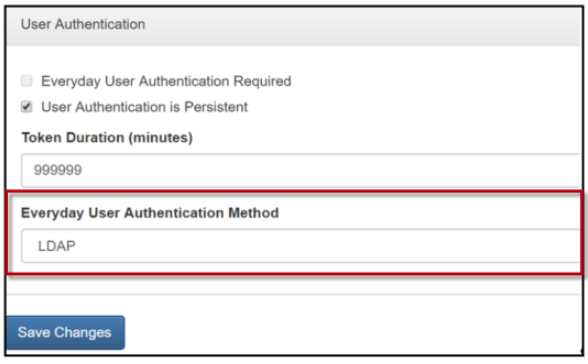
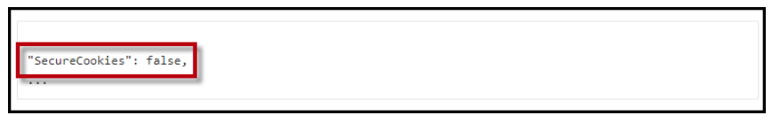

The following authentication methods are supported for the EMS Kiosk App.
See Also: EMS Kiosk App Parameters.
NOTE: Badge authentication provides the best user experience and most secure authentication.
If Badge is the Primary Authentication, the Secondary Authentication options are:
NOTE: For provisioning authentication in the EMS Kiosk App, only LDAP and EMS Native authentication methods are supported.

NOTE: This setting controls the authentication method for EMS Kiosk App provisioning only. Everyday User authentication and validation within the EMS Kiosk App is managed per profile per Security Parameter. For more information on Profile Security Parameters, see Parameters Tab.
Clear cache in EMS Platform Services and in the EMS Web App Admin Portal.
NOTE: By default, the EMS Kiosk App uses secure cookies. We strongly recommend you use this approach in your production environment. However, you may want to test without SSL. To disable secure cookies in your test environment, add the following to appsettings.json inside the "PlatformOptions" section:
